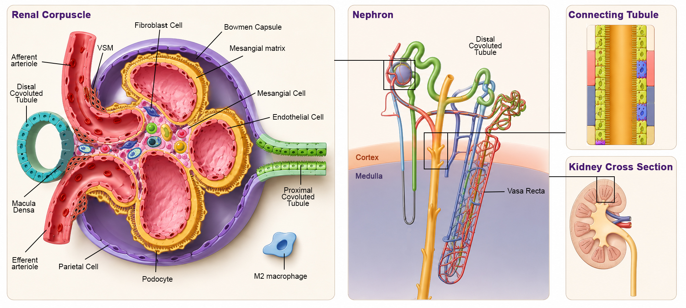

What is diabetic kidney disease?
A disease that damages the kidneys’ filtering system — cell type by cell type
Diabetic kidney disease (DKD) is the leading cause of end-stage renal disease worldwide, affecting 20–40% of people with diabetes. It progressively damages the kidney’s microscopic filtering units — the nephrons — through a combination of metabolic stress, inflammation, fibrosis, and vascular injury. Current therapies slow progression but do not halt it.
The Diabetic Kidney Disease Map (DKDM) is a free, open-access resource that organizes everything we know about DKD at the molecular level — across all 24 types of kidney cells — into one interactive platform. Whether you are looking for a specific gene, exploring enriched pathways, or simulating a cell’s signaling network, DKDM gives you the tools to navigate the disease systematically.
Who is this for?
Built for anyone investigating diabetic kidney disease
Nephrologists & Clinicians
Find which genes and pathways are dysregulated in specific kidney cell types. Link from any gene to clinical databases for therapeutic context.
Systems Biologists
Download cell-type-specific PPI networks, centrality analyses, and SBML-format ODE models for simulation and network analysis.
Drug Discovery Researchers
Identify hub genes as potential targets, explore druggability scores, and find cell–cell communication axes relevant to DKD.
Students & Educators
Start with the Use Cases page for step-by-step examples, then explore the interactive maps and documentation to learn systems biology in a real disease context.
Start exploring
What do you want to investigate?
Anatomical overview
From whole-organ anatomy to single cells
DKDM maps 24 renal cell types across the nephron and renal corpuscle. Use this illustration to orient yourself before diving into a specific cell type, the cell–cell communication network, or the dynamic models.
